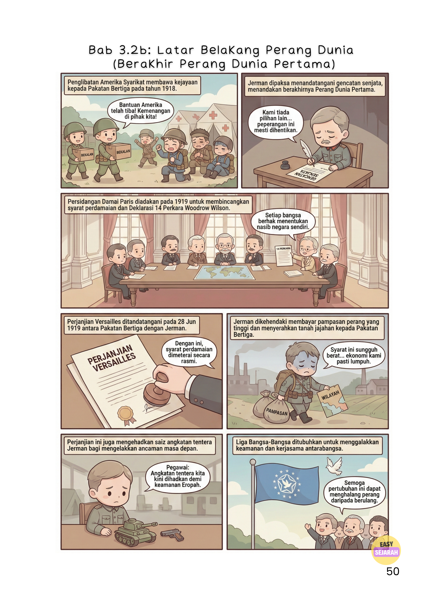
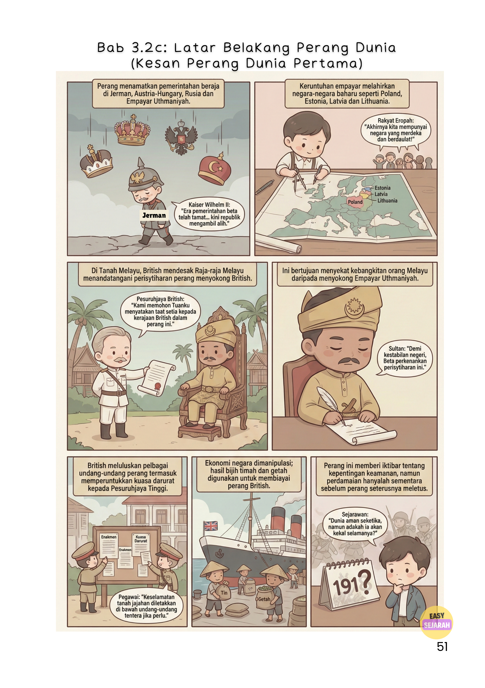

Perang Dunia Pertama: Macam Mana Satu Tembakan Boleh Bakar Seluruh Dunia?
EasySejarah · Punca, Timeline & Kesan PD1
💰 Imperialisme🤝 Pakatan💥 Balkan⚖️ Versailles🇲🇾 Kesan pada Tanah Melayu
Okay, jujur — bila sebut "Perang Dunia Pertama", ramai yang terus rasa mengantuk. 😴 Tapi tunggu. Bayangkan satu tembakan pistol. Satu je. Lepas tu — dalam masa beberapa minggu — hampir seluruh dunia dah berperang. Gila tak? Itulah yang berlaku pada tahun 1914. Jom kita faham why.
🔍 Kenapa Perang Ini Berlaku? 3 Sebab Besar
1. 💰 Semua Orang Nak Jadi Boss
Zaman tu, negara-negara Eropah dah maju gila sebab Revolusi Industri. Kilang dah ada. Teknologi dah canggih. Tapi ada satu masalah besar — mereka semua nak bahan mentah dan pasaran baharu.
Jadi apa yang diorg buat? Berebut tanah jajahan.
Ingat macam group project yang semua orang nak jadi leader? Lebih kurang macam tu lah. Tapi versi yang lagi serius — dengan tentera dan senjata. Perancis dengan Jerman? Memang dah lama tak suka menyuka.
2. 🤝 Pakatan Yang Bahaya
Ketika tu dunia terbahagi dua blok besar:
⚔️ Kuasa Tengah
🇩🇪 Jerman
🏰 Austria-Hungary
🇧🇬 Bulgaria
☪️ Empayar Uthmaniyah
🛡️ Pakatan Bertiga
🇬🇧 Britain
🇫🇷 Perancis
🇷🇺 Rusia
+ Serbia, Itali, Romania...
Sounds okay kan? Tapi masalahnya — setiap blok dah berjanji: "Kalau kau diserang, kami tolong."
⚠️
Ini bahayanya!
Kalau satu negara bergaduh — semua kena masuk sekali. Macam kalau kawan kau gaduh, kau pun kena gaduh sama. Multiplied by seluruh Eropah.
3. 💥 Satu Tembakan yang Mengubah Dunia
28 Jun 1914. Sarajevo, Bosnia.
Archduke Franz Ferdinand — Putera Mahkota Austria-Hungary — tengah buat lawatan rasmi dengan isterinya, Sophie. Lepas tu... dia kena tembak. Mati. Oleh seorang pemuda Serbia bernama Gavrilo Princip.
Satu tembakan je. Tapi sebab pakatan tadi dah wujud — ia jadi macam domino:
⚡ Chain Reaction
🔫
Austria-Hungary → serang Serbia
→
Rusia → "Kami tolong Serbia!"
→
Jerman → "Kami tolong Austria-Hungary!"
→
Britain & Perancis → "Kami tolong Rusia!"
🔥
Seluruh Eropah → perang!
Ilustrasi dari e-komik EasySejarah — Bab 3.2a: Latar Belakang Perang Dunia Pertama
Jerman isytihar perang pada Perancis, ceroboh Belgium
4 Ogos 1914
Britain masuk perang menentang Jerman
Okt 1914
Empayar Uthmaniyah join Kuasa Tengah
Mac 1915
Itali join Pakatan Bertiga
April 1917
Amerika Syarikat akhirnya masuk — game changer!
11 Nov 1918
Gencatan senjata — perang tamat. Lebih 17 juta orang mati.
🕊️ Macam Mana Perang Ini Berakhir?
Amerika Syarikat masuk lambat — tapi bila masuk, terus jadi game changer. Pakatan Bertiga menang. Jerman kalah. Dan bermulalah chapter yang lagi menyedihkan.
📋 Persidangan Damai Paris (Januari 1919)
Presiden Amerika, Woodrow Wilson, cadangkan 14 Perkara — idea pasal keamanan dunia. Yang paling penting: setiap bangsa berhak tentukan nasib sendiri. Bunyi baik kan? Tapi tunggu dulu...
⚖️ Perjanjian Versailles (28 Jun 1919)
Ni lah perjanjian yang brutal untuk Jerman. Syarat-syaratnya:
😤
Jerman kena tanggung semua blame — semua salah diorg katanya
💸
Bayar pampasan yang sangat besar kepada Pakatan Bertiga
⚔️
Potong saiz tentera secara drastik
🗺️
Serah wilayah dan tanah jajahan kepada Pakatan Bertiga
😤
Bayangkan perasaan Jerman masa tu...
Bukan sahaja kalah — maruah pun dirobek. Kena bayar, kena serah, kena potong tentera. Rakyat Jerman marah sangat. Dan rasa marah inilah yang kemudiannya... spoiler alert... mencetuskan Perang Dunia Kedua.

Ilustrasi dari e-komik EasySejarah — Bab 3.2b: Berakhir Perang Dunia Pertama
🌍 Kesan Besar: Dunia Dah Tak Sama Lagi
🏰
Empayar-empayar Besar Runtuh
Empayar Jerman, Austria-Hungary, Rusia, Uthmaniyah — semua habis. Gone. Beratus-ratus tahun wujud, tapi perang ni tamatkan semuanya.
🌍
Negara-negara Baru Lahir
Poland, Estonia, Latvia, Lithuania, Czechoslovakia, Yugoslavia, Lebanon, Syria, Iraq — semua lahir lepas perang ni. Republik Turki pun lahir di bawah Mustafa Kemal Ataturk.
🇲🇾
Tanah Melayu Pun Kena Tempias!
Kita jauh dari Eropah. Kita tak hantar tentera pun. Tapi kita tetap kena tempias dia. British yang jajah kita — diorang squeeze ekonomi Tanah Melayu untuk biayai perang mereka.
🇲🇾 Kesan kepada Tanah Melayu — Details
British mengeksploitasi hasil bijih timah dan getah kita habis-habisan untuk membiayai perang. Lepas tu diorang perkenalkan undang-undang ketat untuk control rakyat:
To Vest in the High Commissioner Exceptional Power in Time of Public Emergency Enactment 1914
The Trading With Enemy Enactment 1914
The Naval and Military News (Emergency) Enactment 1914
💡
Moral of the story?
Bila dunia bergolak, tiada sesiapa yang benar-benar selamat — walaupun kita jauh dari medan perang.

Ilustrasi dari e-komik EasySejarah — Bab 3.2c: Kesan Perang Dunia Pertama
Perang Dunia Pertama berlaku sebab ketamakan + pakatan yang salah + satu kejadian yang tak dijangka.
Keamanan 1919? Rapuh je. Sebab Jerman marah sangat dengan Perjanjian Versailles — api tu tak padam. 20 tahun kemudian, Perang Dunia Kedua pun meletup.
Hargailah keamanan yang kita ada hari ni. Seriously.
💡 Soalan KBAT — Cuba Jawab!
Walaupun Tanah Melayu tidak terlibat dalam pertempuran, kita tetap merasai kesannya. Apakah iktibar yang boleh diambil tentang kepentingan keamanan global kepada negara-negara kecil seperti Malaysia?
🎬 Nak Belajar Lagi dengan EasySejarah?
Tonton video-video sejarah yang seronok di saluran YouTube kami. Percuma untuk semua pelajar Malaysia!